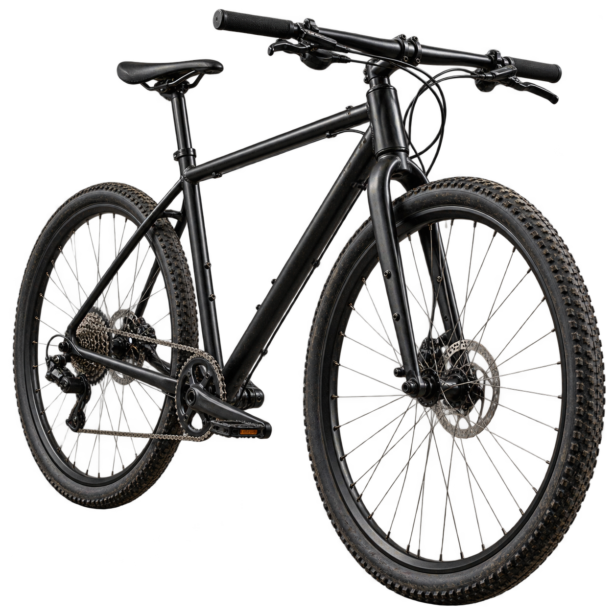
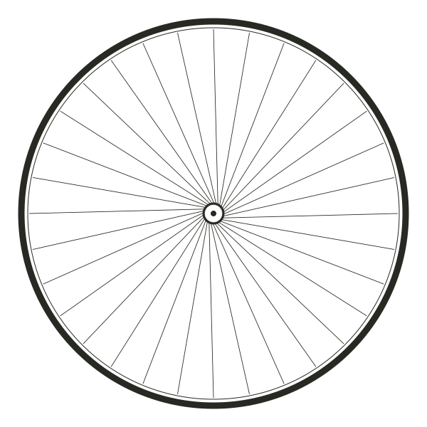
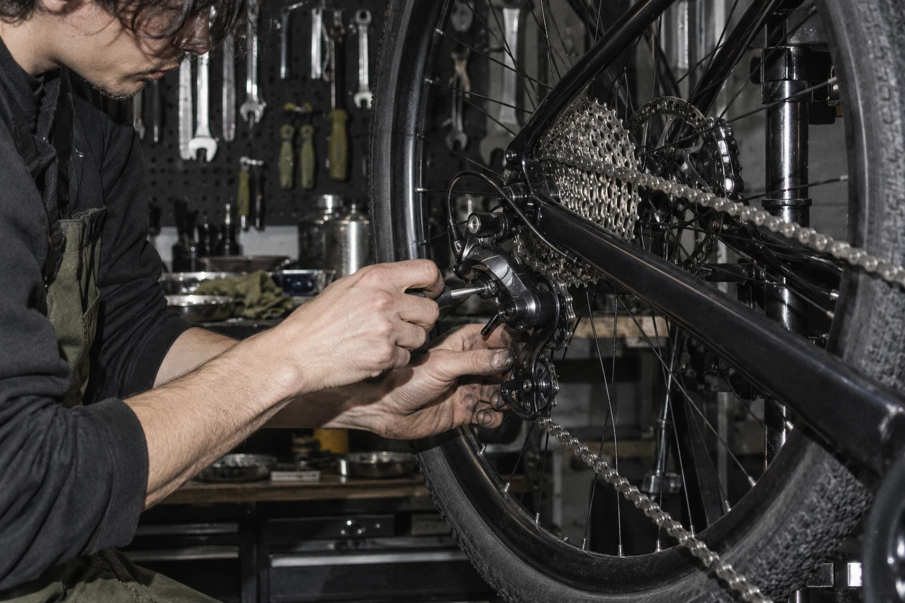
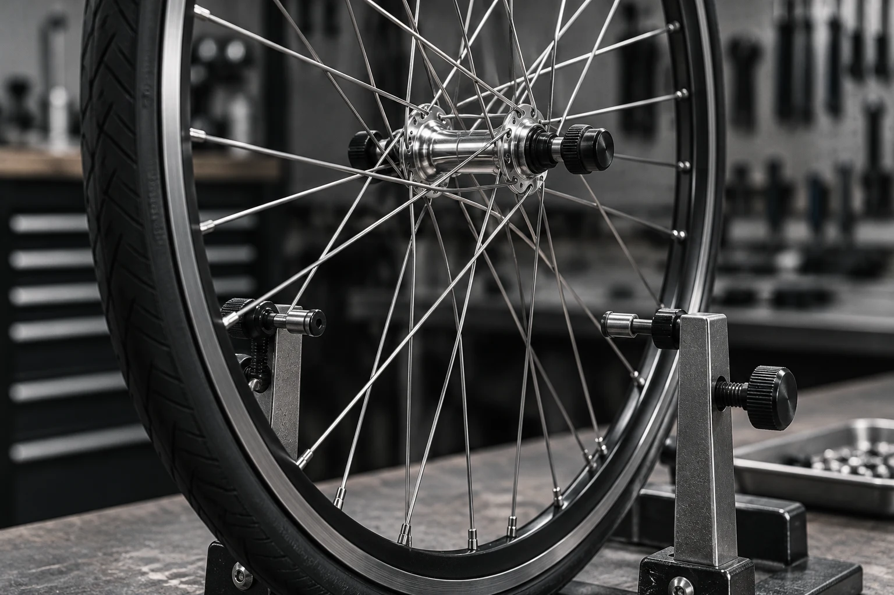

Колёса и камеры
Проколы, «восьмёрки» и спицы.
Вернём колесу ровный ход.

Чтобы ехать вдоль Невы,
а не вести велосипед рядом.

Прокол по дороге на работу или велосипед после долгой зимы — разберёмся. Сначала проверяем, потом согласуем ремонт.
Проколы, «восьмёрки» и спицы.
Вернём колесу ровный ход.
Чётко переключаться.
Уверенно останавливаться.
Проверим, почистим, смажем.
Подготовим к новым километрам.
Учебный прайс. Итоговая стоимость зависит от диагностики, запчасти — отдельно.
Раньше мастера собирали колёса для телег. Мы любим тот же подход: знать каждую деталь и делать руками. Только вместо телег — велосипеды. А вместо пыльной дороги — весь Петербург.
Знакомство начинается с «привет» ↗
меньше шумаНастройка и уход за трансмиссией

ровным кругомПравка и обслуживание колёс
Комплексное сезонное обслуживание
Визуальная концепция мастерской. Изображения созданы с помощью ИИ.
Скрипит, не переключает или просто давно стоит? Расскажи — начнём с этого.
↗ Санкт-ПетербургПетроградская сторона
Адрес и часы работы — при открытии.
+7 (812) 000-00-00 — демо
ВКонтакте — при запуске.
Учебная концепция вымышленной мастерской.
Контакты и цены демонстрационные.